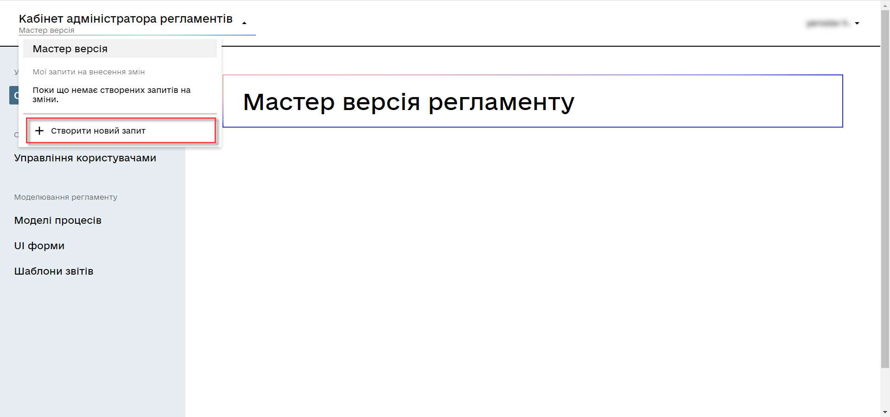
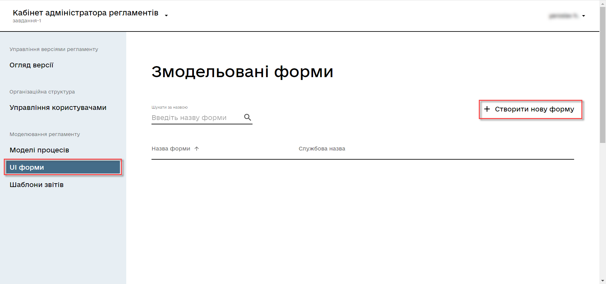
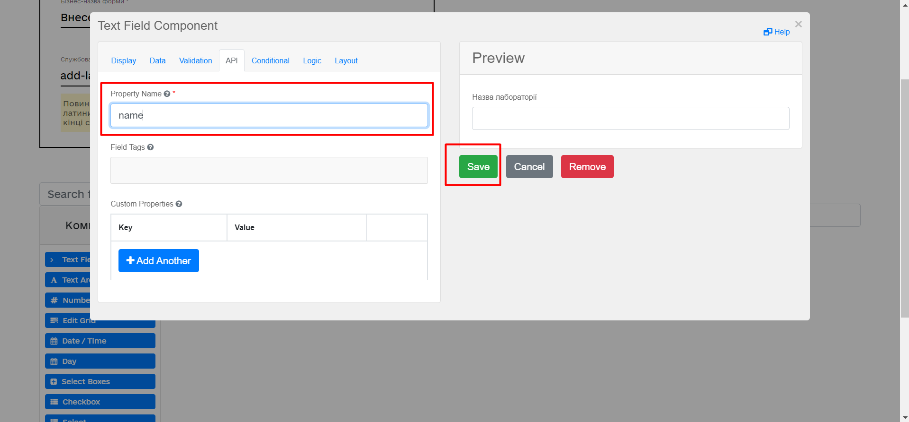

Task 2. Modeling a business process without integration
- 1. Goal
- 2. Prerequisites
- 3. Task steps
- 3.1. Modeling the business process
- 3.1.1. Business process modeling stages
- 3.1.2. Creating a pool for the business process
- 3.1.3. Creating a start event
- 3.1.4. Creating a user task to add data
- 3.1.5. Creating a user task to view data
- 3.1.6. Creating a service task with the business process result
- 3.1.7. Creating an end event
- 3.1.8. Saving the business process schema
- 3.2. Modeling forms
- 3.3. Modeling business process access
- 3.4. Setting up mandatory configurations
- 3.1. Modeling the business process
- 4. Uploading the regulations files to a remote Gerrit repository
1. Goal
- The goal of this task is to learn how to:
-
-
Model a simple business process without integration with the data factory using the following:
-
User and service tasks
-
Standard extensions for user and service tasks
-
JUEL
submission()functions for pre-filling the forms
-
-
Model forms in the regulations administrator portal.
-
Grant access to the business process from the officer portal.
-
2. Prerequisites
Before you start working on the task, complete these prerequisite steps:
3. Task steps
3.1. Modeling the business process
|
At the business process modeling stage, you need to create and save the corresponding BPMN diagram. Download the add-lab-test.bpmn file with a sample business process schema to use as an example. |
3.1.1. Business process modeling stages
For this task, you need to create a business process consisting of six stages:
| After completing all the steps, be sure to save the business process schema you modeled to the appropriate folder with the registry regulations (for details, see Saving the business process schema). |
3.1.2. Creating a pool for the business process
To model a pool for your business process, perform the following steps:
-
Open the Camunda Modeler app and create a new BPMN diagram. To do this, open the menu in the upper left corner and click File > New File > BPMN Diagram.
-
In the toolbar on the left, find the Create pool/Participant item and drag it to the modeling panel. Fill out the following fields:
-
Name: Enter the task’s name — for example,
Add lab data. -
Process Id: Enter the process ID, for example —
add-lab-test. -
Process Name: Enter the process name — for example,
Add lab data.
You need to create a pool for each business process. This is necessary to set the following parameters:
-
A unique
Process Idto use the business process in the system and aProcess Nameto display the name of the process in the user portal. -
The
Executablecheckbox indicates business processes that should be deployed in the registry. The default value istrue.
-
3.1.3. Creating a start event
To create a start event, perform the following steps:
-
In the toolbar on the left, find the CreateStartEvent item (a circle) and drag it to the modeling panel.
-
In the properties panel on the right, fill out the following parameters:
-
Name: Enter
start. -
Initiator: Enter
initiator. This variable will contain information about the user who started the business process.For details on the "initiator" variable, see JUEL functions in business processes.
Every business process must start with a
StartEventand end with anEndEvent.
-
3.1.4. Creating a user task to add data
To create a user task to add data, perform the following steps:
-
Select the circle with the start event from the previous stage and add a new user task by clicking the Append Task icon.
-
Set the task type by clicking the wrench icon and selecting User Task from the menu.
-
In the properties panel on the right, enter the task’s name into the Name field:
Add lab data. -
In the properties panel on the right, configure the following parameters:
-
Click
Open Catalog, select the User Form template, and clickApply. -
Fill out the following fields:
-
Id: Enter
addLabForm. -
Name: Enter the task’s name — for example,
Add lab data. -
Form key: Enter
add-lab-bp-add-lab-test. -
Assignee: Enter
${initiator}.
-
-
3.1.5. Creating a user task to view data
To create a user task to view data, perform the following steps:
-
Select the rectangle with the user task from the previous stage and add a new user task by clicking the Append Task icon.
-
In the properties panel on the right, enter the task’s name into the Name field:
View lab data. -
Set the task type by clicking the wrench icon and selecting User Task from the menu.
-
In the properties panel on the right, configure the following parameters:
-
Click
Open Catalog, select the User Form template, and clickApply. -
Fill out the following fields:
-
Name: Enter
View lab data.The task’s Name field is used to display the task’s name in the business process and does not affect the business logic in any way.
-
Form key: Enter
add-lab-bp-view-lab-test.The Form key field defines the unique ID of the form. It is set when creating a form through the regulations administrator portal. The process of creating a form and assigning an ID is covered further in this topic.
-
Assignee: Enter
${initiator}.The
Assigneefield indicates which user will perform the task. Because the system supports transferring the business process execution between users, it is necessary to indicate the assignee. In our example, it’s theinitiator— the user who initiated the execution of this business process. -
Form data pre-population: Enter the
${submission("addLabForm").formData}variable.
-
For details on using the JUEL functions in the business processes (such as
submission()in our example), see JUEL functions in business processes. -
3.1.6. Creating a service task with the business process result
To create a service task to output the result of the business process, perform the following steps:
-
Select the rectangle with the
View lab datauser task from the previous stage and add a new service task by clicking the Append Task icon. -
Set the task type by clicking the wrench icon and selecting Service Task from the menu.
-
In the properties panel on the right, enter the task’s name into the Name field:
Set BP result. -
In the properties panel on the right, configure the following parameters:
-
Click
Open Catalog, select the Define business process status template and clickApply. -
Fill out the following fields:
-
Name: Enter
Set BP result. -
Status: Enter
Lab data is displayed.
-
This service task sets the business process execution status, displayed in the user portal with the text you specified.
This helps users better understand what happens during the business process execution.
-
3.1.7. Creating an end event
To model the end event to finish the business process, perform the following steps:
-
Select the rectangle with the
Set BP resultservice task from the previous stage and add an end event by clicking the Append EndEvent icon. -
In the properties panel on the right, enter the name into the Name field:
end.
3.1.8. Saving the business process schema
After you finish modeling your business process, save the diagram to the add-lab-test.bpmn file in the project’s bpmn regulations folder in the Gerrit repository. To do this, select File > Save File As from the menu in the upper-left corner, and specify the appropriate name and path for your diagram.
3.2. Modeling forms
|
During the forms modeling stage, you need to create and connect JSON forms to the business process tasks you modeled previously. The forms are connected to business processes using the service name. Use the add-lab-bp-add-lab-test.json and add-lab-bp-view-lab-test.json sample files with form examples. |
3.2.1. Prerequisites
The UI forms used in business processes are modeled in the regulations administrator portal web app.
|
You can get a link to the regulations administrator portal in the OpenShift web console. To do this, go to Networking > Routes, select the appropriate project, search for
|
|
For details on modeling UI forms, see Form modeling process. |
3.2.2. Form types
For this task, you need to create two types of forms to configure interactions with the business process:
3.2.3. Creating a data entry form
|
We recommend using the Google Chrome browser for this task. |
First, you need to create the form where users can enter data. Perform the following steps:
-
Sign in to the regulations administrator portal.

-
By default, the portal opens the master version of the regulations, displaying the forms that were already deployed. At this point, it will be empty.
In the master version, forms are available in read-only mode and cannot be edited.
To add and edit forms, you need to create a version candidate by selecting the
Create new requestitem from the menu in the upper left corner.
-
In the Create new request window, fill out the following fields:
-
Version name: Enter
task-1. -
Version description: Enter
Creating forms for task 1.Click the
Createbutton.After you create a request, the portal automatically redirects you to the version candidate, where you can add and edit forms.
-
-
Go to the UI forms section. To create a new form for the business process, click the
Create new formbutton.
-
In the dialog window, fill out the following fields:
-
Form’s business name: Enter the name of the appropriate user task —
Add lab data. -
Form’s service name: Enter
add-lab-bp-add-lab-test.
-
-
Go to the Build tab.
We recommend using the components from the Updated section.
From the panel on the left, drag the Text Field component onto the modeling canvas and configure the following parameters:
-
In the Display tab > Label field, enter
Laboratory name:
-
In the API tab > Property Name field, enter
name. -
Click
Saveto save your changes.
-
-
From the panel on the left, drag the Text Field component onto the modeling canvas and configure the following parameters:
-
In the Display tab > Label field, enter
EDRPOU or RNOKPP code: -
In the API tab > Property name field, enter
edrpou. -
Click
Saveto save your changes.
-
-
Save your form by clicking the
Create formbutton in the upper right corner:
3.2.4. Creating a form to view data
After you create a data entry form, create another form to view data.
You can copy the form you modeled previously by clicking the copy icon or create a new form by clicking the Create new form button in the upper right corner.
Configure the form’s parameters:
-
Form’s business name: Enter the name of the appropriate user task —
View lab data. -
Form’s service name: Enter
add-lab-bp-view-lab-test. -
For both Laboratory name and EDRPOU or RNOKPP code components, configure the following:
-
In the Display tab, select the Disabled checkbox.
-
Click
Saveto save your changes.
-
3.2.5. Saving the business process forms
-
Save your form by clicking the
Create formbutton in the upper right corner. -
Download your forms by clicking the download icon.

-
Copy them to the forms regulations folder of your project in the local Gerrit repository.
3.3. Modeling business process access
|
At this stage, you need to grant access to the business process from the officer portal. Access parameters are configured via the officer.yml file. |
Create the officer.yml file and specify the following parameters:
authorization:
realm: 'officer'
process_definitions:
- process_definition_id: 'add-lab-test'
process_name: 'Creating a laboratory'
process_description: 'Laboratory creation regulations'
roles:
- officerSave the officer.yml file to the bp-auth regulations folder of your project in the local Gerrit repository.
|
If you don’t specify this configuration, your business process will be deployed in the regulations but will not appear in the user portal.
The |
3.4. Setting up mandatory configurations
The camunda-global-system-vars.yml file cannot be empty. Add the following line to it:
supportEmail: help@support.com
4. Uploading the regulations files to a remote Gerrit repository
To successfully deploy the business process with forms and apply the correct access settings in the target environment, the regulations administrator must upload the locally stored registry regulations files to the remote Gerrit code repository.
To do this, perform the steps described in the following topic: Deploying regulations in Gerrit.